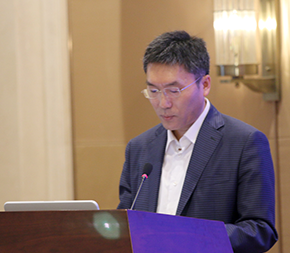
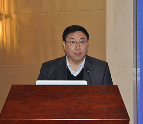

.png)
.png)
.png)
.png)
.png)
.png)
.png)
.png)
.png)
.png)
.png)
.png)
.png)
.png)
.png)
.png)
- 
-
贺德方
科技部政策法规与监督司司长
科技部政策法规与监督司司长贺德方在题为《全面贯彻落实促进科技成果转化法，推动大众创业万众创新》的演讲中介绍了新修订的《中华人民共和国促进科技成果转化法》六个方面的主要修改内容，并指出修订后的促进科技成果转化法对实施创新成果转化，推动大众创业，万众创新有着十分重要的意义。
-
韩秀成
国知局知识产权研究中心主任
国家知识产权局知识产权发展研究中心主任韩秀成在题为《发挥知识产权基础保障作用，让创新之树永远枝繁叶茂》的演讲中指出，知识产权制度是创新的驱动力，也成为激励创新和保护创新的基本保障，要营造一个良好的知识产权文化环境，为创新之树提供肥沃的土壤，创新就会拥有持续的活力和动力。
-
李平
科技部党组成员、科技日报社社长
科技部党组成员、科技日报社社长李平在致辞中指出，十八届五中全会将创新发展确立为"十三五"必须坚持的五大发展理念之首，强调要发挥科技创新在全面创新中的引领作用。要以创新科技服务为抓手，打造包括技术、项目、资金、孵化等在内的全产业链的科技服务平台和新的经济增长点，探索科技新闻媒体和科技管理部门共同推动科技成果向现实生产力转化的发展模式。 李平强调，在工作的推进过程中第一要坚持把社会效益和社会责任放在首位，增加公共产品、公共服务的供给；二要加快健全技术创新市场的导向机制，充分发挥市场在创新资源配置中的决定作用，实现互利共盈的局面；三要发挥政府部门、企业、高校优势，加强各方的合作，在全国形成合力；四要建立一个良好的良性循环的发展机制，大胆探索，积累经验，提高传播力、影响力，使百家院校科技成果走基层活动形成具有良好口碑的品牌，把它给坚持下去。
-
李志民
教育部科技发展中心主任
教育部科技发展中心主任李志民在题为《贯彻落实"创新驱动发展"战略，积极推动高校科技成果转化》的演讲中介绍，我国高校每年获得授权专利都超过十万件，高校还创办了数千家科技型企业，推动了一批创新成果服务社会。
-
王秀义
科技日报社机关党委书记
启动仪式由科技日报社机关党委书记王秀义主持。
-
王志欣
河北省科技厅厅长
河北省科技厅厅长王志欣在题为《携手京津，赢在创新》的演讲中认为，成果转化平台的问题必须解决，要真正突破科技成果转化的难点和堵点。
-
杨跃承
科技部火炬中心副主任
科技部火炬中心副主任杨跃承在题为《创新发展思路，共同推动技术转移转化》的演讲中指出，技术市场体系是技术市场、人才市场和资本市场高度融合的一个市场，创业是技术转移转化最好的一种方式之一，我国每年大约有近三十万项技术成果通过技术市场来进行交易，国家高新区为技术转移转化构建了良好的生态环境。
-
左世全
工信部赛迪研究院工业所所长
7月9日，在百家院校科技成果走基层行动安阳站活动签约仪式上，工信部赛迪研究院工业所所长左世全所长做《中国工业2025》主题演讲。
-
郭哲
中国科协调研宣传部副部长
中国科协调研宣传部副部长郭哲在题为《处于变革时代的科技成果转化及媒体使命》的演讲中指出，人才资源是支撑发展的第一步，应把创新放在全局核心位置，而科技创新起到了一个空间的作用，成果转化无疑是整个创新驱动发展一个最重要的活动，在大数据技术平台和手段上媒体要有一席之地。
- 
-
胥和平
中关村合众创新经济研究院副院长
7月9日，在百家院校科技成果走基层行动安阳站活动签约仪式上，中关村合众创新经济研究院胥和平副院长做《培养新动能，发展新经济》一主题演讲。
-
张绍体
安阳市人民政府副秘书长
7月9日，由安阳市人民政府副秘书长张绍体担任百家院校科技成果走基层行动安阳站活动签约仪式主持人。
-
倪浩
广东博士科技有限公司董事长
广东博士科技有限公司董事长倪浩介绍了企业从事科技服务与成果转化的有益尝试。
-
杜新军
安阳市人民政府副市长
7月9日，安阳市人民政府副市长杜新军在百家院校科技成果走基层行动安阳站活动签约仪式上致词,并预祝安阳市成为百家院校科技成果走基层行动示范城市。
-
李长青
北京恒冠国际科技服务中心主任
北京恒冠国际科技服务中心主任李长青介绍了百家院校科技成果走基层的活动流程。

-
张宗科
北京航空航天大学总工程师
北京航空航天大学总工程师张宗科介绍了北京航空航天大学在科技成果转化方面取得的成功经验。